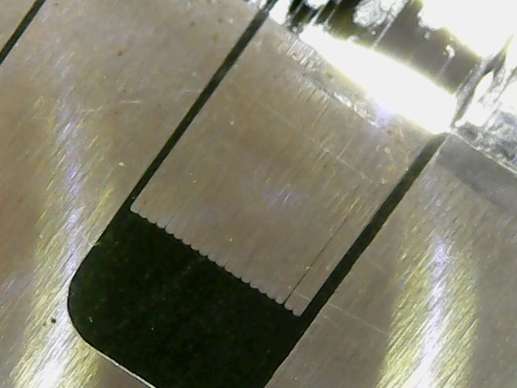
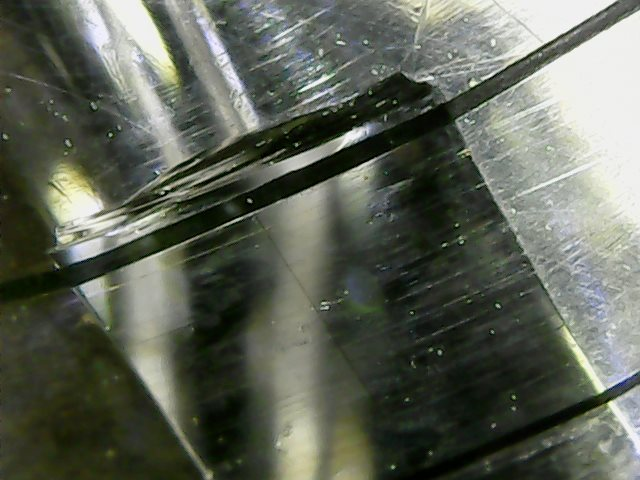
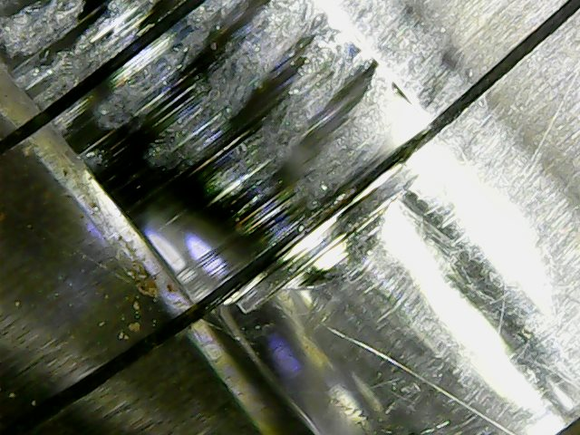
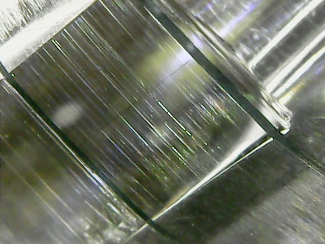
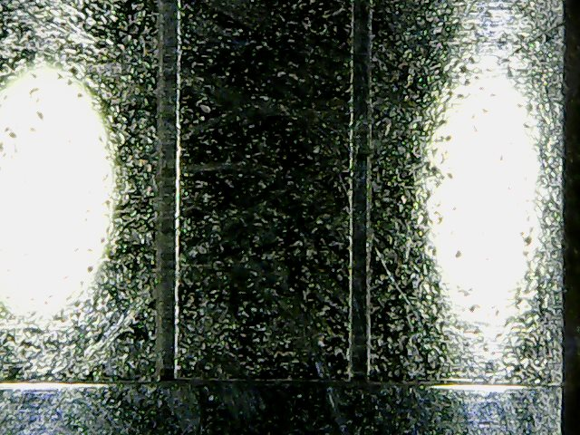

While working on an Otari MX5050 bii tape machine, I took a break to check out the heavily worn heads under a microscope. The owner ended up replacing them after learning that they had allready been re-lapped once before. These heads had seen a lot of use and could no longer maintain a steady signal level when recording. The level would jump around a 4dB range on both channels and had a hard time with highs over 10k even at its fastest speed. I took these photos with a cheap digital microscope that I use for SMD reflowing.
 Here is a shot of the record head in a spot that does not contact the tape. You can see the laminated layers well here. Towards the top of the image is where the tape runs. This part has been worn down to a flat surface.  This is a good shot to see just how deep the tape has eroded the head. You can also barely make out the head gap straight down the middle of the groove. That's where the flux is the strongest and where the tape gets recorded.  Here is track two with the same problem. The tape just can't make good enough contact with the head gap to have a consistant signal aymore.  A good shot of the head gap on the playback head  In contrast to the record and playback heads, the erase head is a ferrite-core type that is bonded with glass. It's a much harder material and doesn't wear as easily as the laminated metal core. The resistance to wear is a trade off for sound quality making it a perfect material for an erase head. JRF magnetics has a good article on the difference.